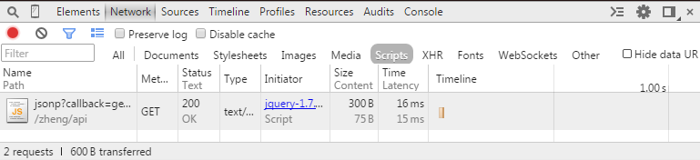
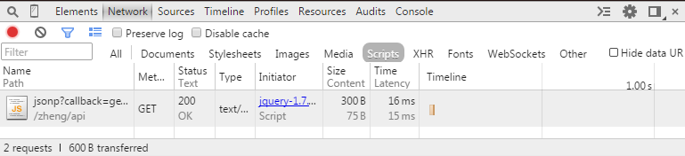

众所周知，由于浏览器的同源策略，js是不允许跨域ajax请求的，但浏览器却对<script>标签的src不做检查，并且允许任意的域中的文件被加载，于是JSONP(JSON with Padding)成为了跨域请求的解决方案，但是需要服务器端的配合，由此，JsonpUp.js诞生！她可以让前端er们更专注、更自由！
Tip:确切的说，jsonp并不属于ajax（XHR），而是Scripts文档加载！

提供javascript跨域请求方案
v1.1.0 beta众所周知，由于浏览器的同源策略，js是不允许跨域ajax请求的，但浏览器却对<script>标签的src不做检查，并且允许任意的域中的文件被加载，于是JSONP(JSON with Padding)成为了跨域请求的解决方案，但是需要服务器端的配合，由此，JsonpUp.js诞生！她可以让前端er们更专注、更自由！
Tip:确切的说，jsonp并不属于ajax（XHR），而是Scripts文档加载！

1、引入JsonUp.js文件（依赖Jquery.js）
2、使用方法示例
Licensed under the MIT License.
by Zhang Shuzheng
QQ群:305155242
Copyright © 2015 WebFE.net(Web前端网) All Rights Reserved.